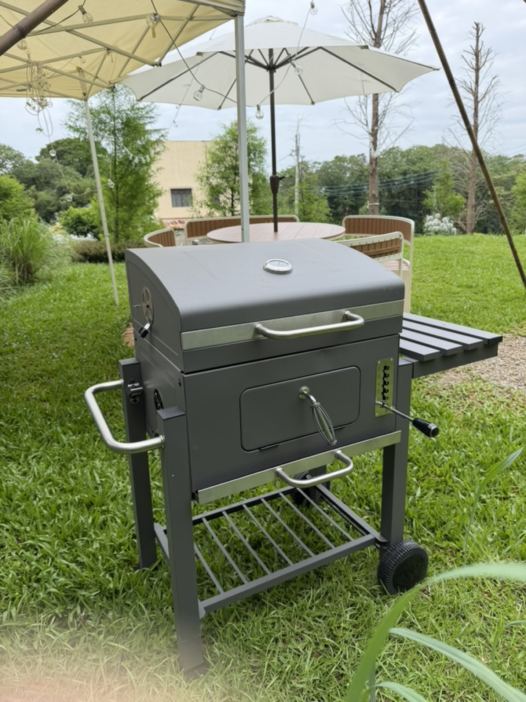

Two Dome Tents Hidden in a Forest Lawn in Yangmei, Taoyuan
Not a row of tents at a busy campsite, but a quieter, more private small-group exclusive space in the forest.
Two private dome tents, each with its own lawn, outdoor kitchen, and forest view. No tent setup needed, no shared crowded campsite — just a quiet outdoor stay for families, friends, couples, and travelers looking for a private nature retreat near Taipei.
Taoyuan, Taiwan｜Private Glamping｜4–6 Guests｜Private Lawn｜Outdoor Kitchen｜Bathtub｜BBQ｜Night Lights｜Near Taipei
Not a row of tents at a busy campsite, but a quieter, more private small-group exclusive space in the forest.

The most charming part of Cloud Tent is the in-tent scenic bathtub and large green window views.

Perfect for friend gatherings, birthday celebrations, and family dinners.

Beds, air-conditioning / heating, and indoor rest space inside — ideal if you want nature without the setup.

When the string lights come on, the lawn and tents become the best place to chat and take photos.
If you only want a beautiful, comfortable place with a private lawn and outdoor kitchen for your event, you do not have to stay overnight.


Beyond the forest lawn and dome tents, enjoy dining, karaoke, and outdoor movie experiences.

Lawn, string lights, and projection — the most atmospheric night gatherings.

An easy gathering vibe — not a professional KTV, but still fun to sing together.

Great for hot pot, BBQ, and group meals — stay from noon to evening without getting bored.
String lights and night views together — the forest gathering feeling guests love most.

Best for families, friends, outdoor meals, private lawn gatherings, BBQ, karaoke, and outdoor movie nights.
Best for a quiet vacation feeling, forest-view bathtub, indoor projector, couples, close friends, and small family stays.
Joyforest has two dome tents in two private areas (Balloon Tent and Cloud Tent). Each tent comes with its own exclusive outdoor lawn.
Check-in / Check-out: 15:00 / 12:00 (same for all rooms, weekdays and holidays)
Balloon Tent & Cloud Tent｜Weekday single-tent private stay NT$7,800 NT$5,000 check-in offer｜Holiday single-tent area NT$7,800 NT$5,000 check-in offer
Two-tent full private stay (Balloon + Cloud)｜NT$12,800 NT$9,800 check-in offer weekdays & holidays (both tents required; no other guests on site)
Single Area｜Weekdays from NT$880 / hour
Double Area｜Weekdays from NT$1,480 / hour
Overnight stays are best for a full private forest retreat. Event rentals are suitable for baby milestone parties, birthdays, proposals, small gatherings, family events, pet gatherings, BBQ, outdoor movies, and photo shoots.
Browse photos, pick your vibe, then choose your tent or event package.